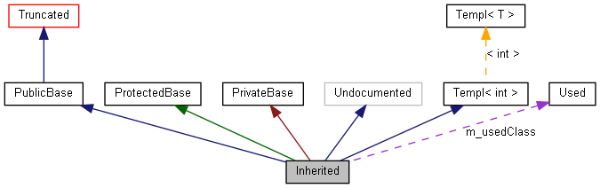

Denne side forklarer, hvordan man skal fortolke de grafer, der genereres af doxygen.
Tag følgende eksempel:
class Invisible { };
class Truncated : public Invisible { };
class Undocumented { };
class PublicBase : public Truncated { };
template<class T> class Templ { };
class ProtectedBase { };
class PrivateBase { };
class Used { };
class Inherited : public PublicBase,
protected ProtectedBase,
private PrivateBase,
public Undocumented,
public Templ<int>
{
private:
Used *m_usedClass;
};
Hvis MAX_DOT_GRAPH_HEIGHT i konfigurationsfilen er sat til 240, vil dette resultere i følgende graf:
 De forskellige slags kasser i ovenstående graf har følgende betydninger:
-
En udfyldt sort kasse repræsenterer den datastruktur eller klasse, grafen er genereret for.
-
En kasse med sort kant betegner en dokumenteret datastruktur eller klasse.
-
En kasse med grå kant betegner en udokumenteret datastruktur eller klasse.
-
En kasse med rød kant betegner en dokumenteret datastruktur eller klasse, for hvilken ikke alle nedarvnings- og indeholdelses-relationer er vist. Grafer beskæres, hvis de fylder mere end de specificerede dimensioner.
Pilene har følgende betydninger:
-
En mørkeblå pil viser en offentlig nedarvningsrelation mellem to klasser.
-
En mørkegrøn pil viser en beskyttet nedarvningsrelation.
-
En mørkerød pil viser en privat nedarvningsrelation.
-
En lilla, stiplet pil bruges, når en klasse er indeholdt i eller benyttes af en anden klasse. Ved pilen står navnet på den eller de variable, gennem hvilke(n) den klasse, pilen peger på, er tilgængelig.
-
En gul, stiplet pil viser forholdet mellem en template-instans og den template-klasse, den er instantieret fra.Ved pilen står template-parametrene brugt ved instantieringen.